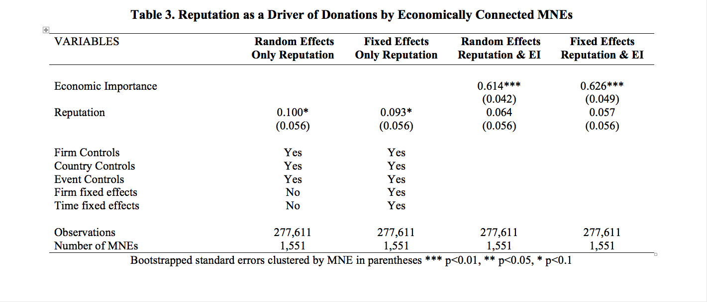

Is it the Pursuit of Reputation?
A stream in the non-market literature explains that decision makers engage in philanthropy with the goal of boosting their firms’ reputation (Exley, 2018). Muller and Kräussl (2011), for instance, proxy reputation for social irresponsibility with the number of concerns in the database Kinder, Lydenberg, and Domini for 442 U.S. firms and find that negative scores are associated with a relatively high likelihood of donating in the aftermath of Hurricane Katrina. To test for the possibility that MNEs’ pursuit of reputational capital sufficiently explains variance in donations, we calculated a Janis-Fadner coefficient of imbalance (JFC)—a widely used variable of media reputation (see Lamin and Zaheer, 2012; Love, Lim, and Bednar, 2017 for surveys in the organization literature).
Our specific variable is the net pre-disaster media coverage sentiment score for each firm. Our variable is calculated based on media reports featuring each firm in our sample for one year before and one year after the date of a disaster. We use natural language processing to quantify the tone or sentiment of media reports in Factiva mentioning each MNE in our sample in a period of one year before the start date of the disruption. The JFC shows the proportion of negative versus positive articles and is calculated as follows:
where, e = annual number of positive media reports pertaining to the firm; c = annual number of negative media reports, and t = e+c. Our analyses thus consider firms with a JFC greater than zero as having positive reputations, and those with a JFC less than zero as having a negative reputation.
Table 3 shows that reputation becomes statistically insignificant when the model includes economic importance. An interaction of the two variables, whose effect is sizeable (p<0.01), indicates that the economic importance of the country to the MNE is a precondition for the pursuit of reputation. The results suggest that economic importance mediates the effects of the pursuit of reputation on donating in this context.
